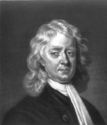

Belki de hiç kimse, matematik, fizik ve astronomi alanlarına Isaac Newton’ın (1642-1727) yaptığı katkıdan fazlasını yapmamıştır. Zamanının en saygıdeğer dehası olarak bakılan Newton, şövalyelik nişanı verilen ilk bilim adamıydı. Hareket ve yerçekimi üzerine olan kuramları, yüzyıllarca aşılamadı.

Fakat Isaac Newton’un ilk zamanları, çok gelecek vaat etmiyor gibi görünüyordu. Bir İngiliz malikânesinde babasının ölümünden üç ay önce doğan Newton, o kadar küçük ve erken doğmuştu ki annesi, onu bir litrelik kaba sığdırabileceğini söyleyerek dalga geçerdi. Newton, annesini sadece iki yaşındayken kaybetmesine rağmen mucizevî şekilde bebeklik döneminde hayatta kalmayı başardı. Onu hiçbir zaman sevmeyen büyükannesi ve büyükbabası tarafından büyütülen Newton, ilkokulda çok kötü notlar aldı. Öğretmenleri onu “avare” ve “savruk” olarak tanımladılar. Ama aile işi olan çiftçiliğe hiç ilgi göstermemesinden dolayı da büyükbabası onu üniversiteye yolladı.
Newton Cambridge’te, Descartes, Boyle, Galileo, Kepler, Copernicus ve Euclid’in eserlerine çalıştı. Okul 1665’te vebadan kapandığı zaman Newton, eğitimli ve esin dolu bir zihin ile eve döndü. Sonraki iki yılda matematiği ve bilimi kökten değiştirmeye başladı. Gottfried Wilhelm Leibnitz ile eşzamanlı olarak ‘kalkülüs’e[8] büyük katkı sağladı. Newton, beyaz ışığın aslında görünen ışığın tüm farklı renklerinin bir birleşimi olduğunu önererek optikte ilerlemeler gerçekleştirdi. Ve belki de en önemlisi, zamanında Newton, hareketin üç yasasını geliştirmeye başladı: (1) Hareket halindeki bir nesne, dışarıdan bir kuvvet uygulanana kadar hareket halinde kalır, (2) bir cismi etkileyen bir kuvvet, ivmesiyle doğrudan orantılıdır ve (3) her eylem için eşit ama zıt bir tepki vardır.
Newton’un hareket yasaları, İlkeler kitabını yayınladığı 1687 yılına kadar halka açılmadı. Kitap, evrensel çekim yasasını da içeriyordu: Evrendeki her nesne, kütleleriyle doğru orantılı ve aralarındaki mesafenin karesi ile ters orantılı bir kuvvetle diğer bir nesneyi çeker.
EK BİLGİLER:
1. Newton’un yerçekimi yasası, Albert Einstein 1905’te ‘genel görecelilik kuramı’nı geliştirene dek geçerliydi.
2. Newton, bir zamanlar annesini ve üvey babasını, evlerini yakmakla tehdit etmişti. Sonraları bundan dolayı özür diledi.
3. Newton ve Leibnitz, kalkülüsü ilk olarak hangisinin geliştirdiği üzerine yıllarca birbirlerine kan davası güttüler.
4. Newton’un sonraki yılları, aklî dengesizliği yüzünden alt üst oldu. Ölümünden sonra, muhtemelen kimyada yaptığı sonuçsuz deneyleri dolayısıyla, vücudunda büyük miktarda cıva bulundu. Cıva, tuhaf davranışlarının nedeni olmuş olabilir.